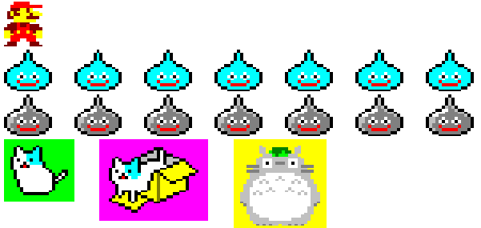

チェス
ANSIコードで彩色
移動前後の盤を並べて表示
特殊な移動も再現
ソースのダウンロード
作品プロフィール
使用言語： Java
開発環境： eclipse
概要：
Javaの学習の理解を深めるために作成しました。
オブジェクト指向、継承、多態性、カプセル化の理解に役立ちました。
機能：
盤と駒をeclipseのコンソールでカラーで表現
盤と駒の色をゲーム開始前に複数のランダムパターンの中から選択
それぞれの駒の動きを再現（不可能な移動はエラー表示）
特殊な移動の再現（キャスリング、ポーンの動き、アンパッサン）
移動前と移動後の盤を並べて表記
手番に合わせて盤を反転
後記：
クラス分けや部品化の構成が増築工事の繰り返しで複雑で一貫性の無い構造になってしまい、最初の設計の重要性を痛感しました。
ANSIのカラーコードでの彩色にしてしまい、駒に環境依存文字（♔♕♗♘♖♙）を使ってしまったので、それぞれに対応する環境でなくては狙った表記にならない仕様になってしまいました。
可読性の良いコードの感覚が掴めず、それも反省点の１つです。
おまけ
ついでに作ったjavaで出力するドット絵です

戻る